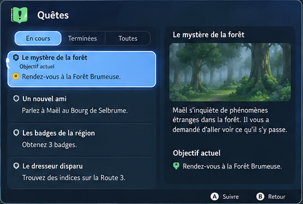
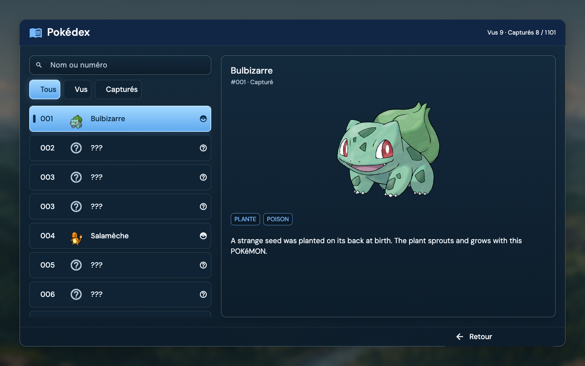
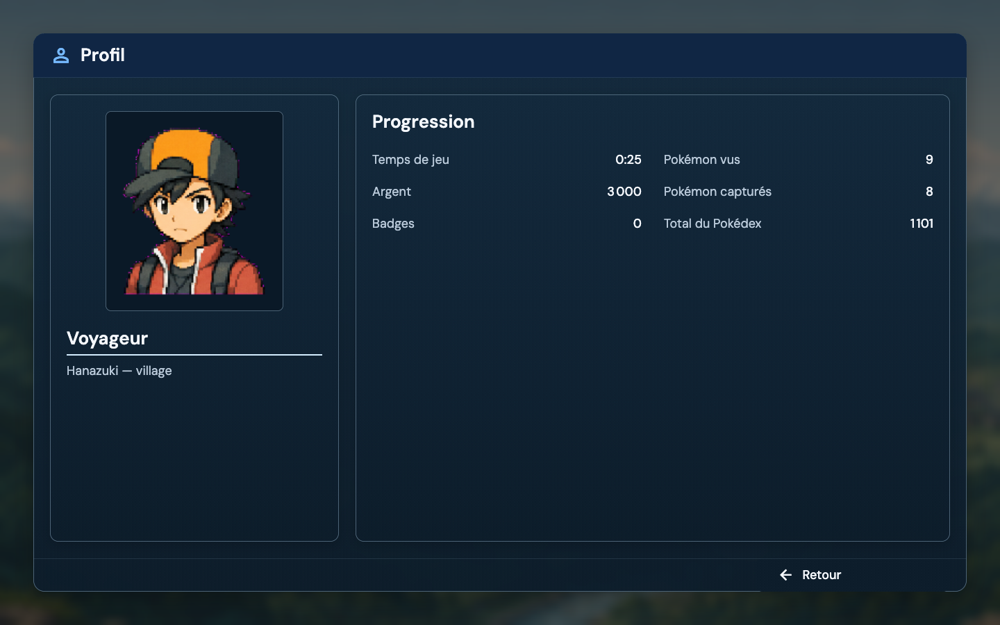
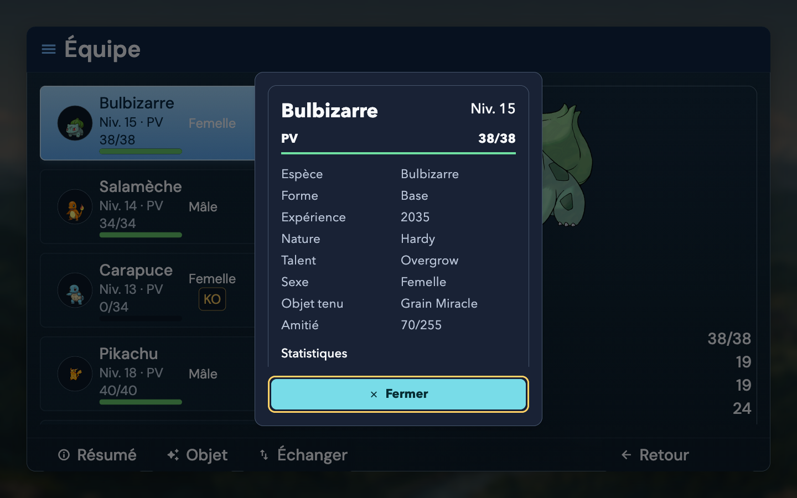
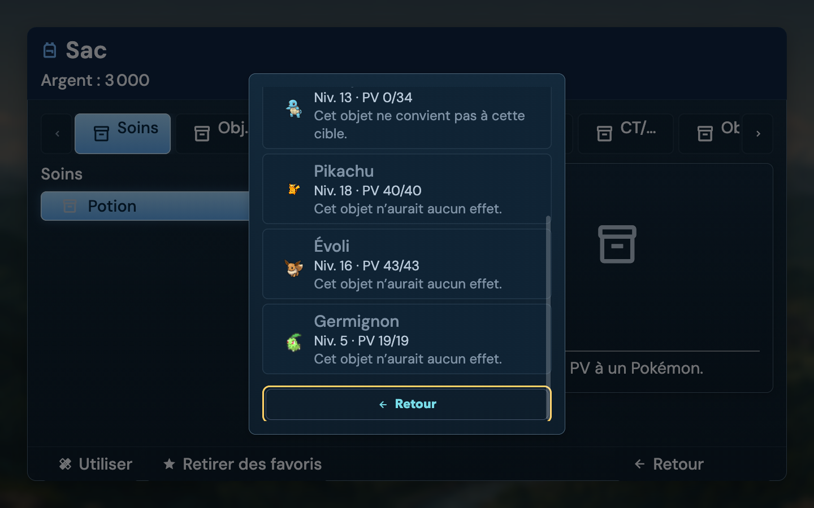
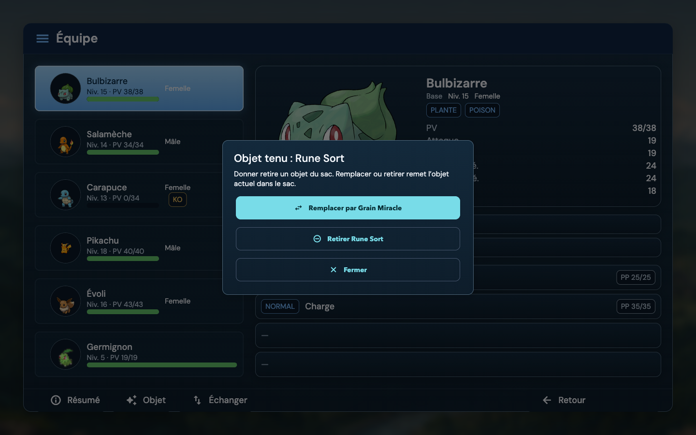
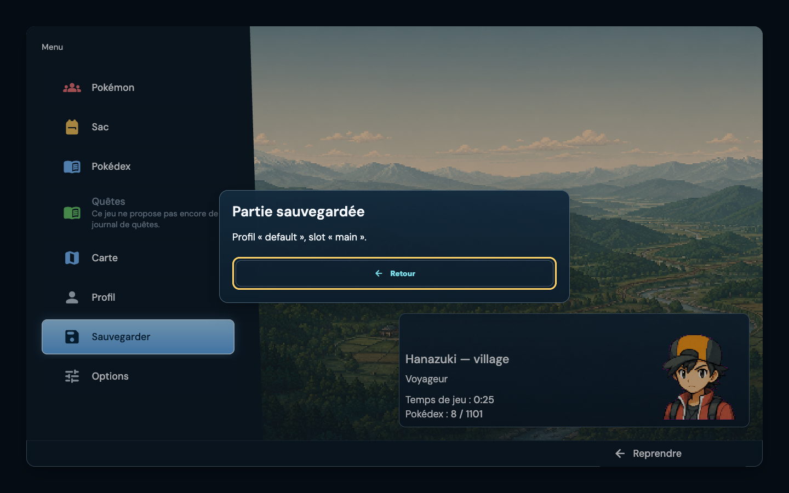
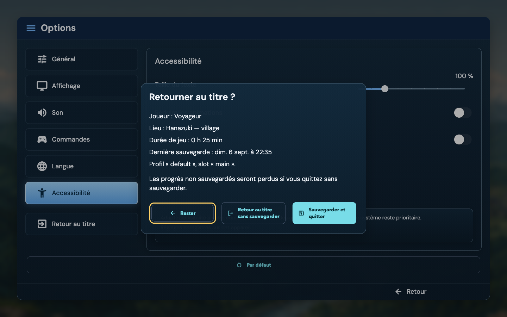

LOT 11 · MENU-KPARTIAL · TO REVIEW
Des menus vérifiés.
Une certification encore ouverte.
Le train de 17h42 · POST-UI-MENU-013 · 6 septembre 2026
Cette passe répare les défauts révélés par la certification : commandes périmées après erreur, réponses de sessions terminées, chargement inutile du catalogue, focus et défilement de la preview, contraste, annonces et contexte des fenêtres de dialogue.
La clôture globale est bloquée par les Quêtes du lot 10. Le Quest Book et le raccordement réel de FS-NAR-004 ne sont pas présents. Les parcours non exécutés et les écarts artistiques restent ouverts. Ce dossier ne vaut pas approbation visuelle de Yoahn.
Base Git main @ 87226620ca85b1d08d64aa039d59d9360a1e5fba · Revue préparée pour le commit local autorisé ; SHA exact dans Notion · Aucun push · Ticket Notion · Reçu technique et empreintes des 25 fichiers
Revue finale du 6 septembre 2026
Correctifs prêts pour un commit local ; certification globale PARTIAL. L’audit initial a retrouvé les 22 fichiers de la livraison précédente sans dérive et les huit fichiers étrangers inchangés. La relecture indépendante a révélé quatre familles de défauts supplémentaires, reproduites avant correction.
538 réussites UI3 captures optionnelles ignorées. Matrice actuelle : 324 configurations + 11 cas ciblés = 335.
124 réussites runtimeCommandes, catalogue, cycle de vie, courses de sauvegarde et smoke combat.
50 cycles natifsDernier build profile, viewport constant 1821×884, DPR 1.
Vérifications sur le code final
Les logs conservés normalisent uniquement les espaces de fin de ligne et les lignes vides finales pour passer le contrôle Git ; les commandes, résultats et messages d’erreur sont conservés.
Commandes supplémentaires exactes de cette revue
cd packages/map_runtime
flutter test --no-pub test/player/runtime_player_pause_evolution_items_test.dart test/player/runtime_player_pause_data_builder_test.dart test/player/runtime_player_pause_pokedex_test.dart test/player/runtime_player_pause_profile_test.dart test/player/runtime_player_coordinator_pause_test.dart test/player/runtime_player_preferences_apply_test.dart test/player/runtime_player_coordinator_lifecycle_test.dart test/player/runtime_player_save_race_test.dart test/player/menu5_party_commands_test.dart test/runtime_pokemon_evolution_loader_test.dart test/player/runtime_player_back_policy_test.dart test/phase_a_golden_battle_slice_smoke_test.dart --reporter expanded
cd examples/playable_runtime_host
node --test tool/menu11_profile_check.test.mjs
cd /tmp/menu11-isolated/examples/playable_runtime_host
flutter build macos --profile -t dev/marionette_main.dart --dart-define=MARIONETTE_PROJECT_PATH=/Users/karim/Library/Containers/com.yoahnl.pokemap.editor/Data/Documents/menu11_qa_20260906 --dart-define=MENU_QA_REVISION=87226620c-menu11-reviewed-2
node examples/playable_runtime_host/tool/menu11_profile_check.mjs <URI_VM_DU_BUILD_PROFILE> /tmp/menu11r-profile.json cold 50
UI, preview, build/test MCP et hygiène reprennent les commandes complètes de la première passe. Chaque log d’analyse liste les fichiers exacts. Deux wrappers de nettoyage ont renvoyé PermissionError après une analyse sans problème ; l’analyse runtime directe finale, exit 0, est la preuve retenue. Les processus de test appartenant à ces exécutions ont été récupérés.
Contrôle natif final
Révision 87226620c-menu11-reviewed-2 : 50/50 cycles, mesure arrêtée après exécution, carte hanazuki-village et position (16,9) conservées. Ouverture à froid : 398,745 ms ; p95 des 49 ouvertures chaudes : 194,664 ms. Build p95 : 2,004 ms ; raster p95 : 4,091 ms. Ces deux derniers indicateurs portent sur les frames reçues par callbacks groupés pendant la mesure, sans attribution exacte à chaque cycle. RSS : 374 685 696 → 405 585 920 octets ; cache décodé stable à 8 949 760 octets après le premier cycle. Reçu brut · Log
Le viewport final est resté 1821×884 à DPR 1 pendant les 50 cycles. La comparaison historique avant/après utilisait 1920×921 : aucun gain comparatif n’est déduit entre ces deux runs. Les interrupteurs natifs mesurent 60×48 px ; les clics à (1632,5 ; 297) et (1632,5 ; 343) activent puis désactivent la réduction des animations. La sauvegarde normale affiche bien « Partie sauvegardée ». Le projet réel n’a pas été modifié : ces actions utilisent la copie jetable documentée ci-dessous.
Verdicts indépendants : Erdos valide les gardes de session et les 124 tests runtime ; Noether valide la correction des cibles macOS et leur fixture ; Schrodinger ne relève plus de défaut bloquant dans le delta runtime et le driver. Tom a recompilé les sources finales et rejoué les 50 cycles, les clics aux bords des interrupteurs et la sauvegarde.
Limites maintenues : Quêtes / FS-NAR-004 absents ; parcours d’installation, périphériques physiques, VoiceOver et approbation artistique non validés. Les premiers tests avaient masqué les dimensions natives et certaines courses de fermeture : les nouvelles reproductions corrigent ces angles morts, sans prouver l’absence de tout bug. FG-165 reste DONE dans le roadmap ; aucune rétrogradation ni réécriture du roadmap.
Première passe : preuves historiques
536 réussitesSuite UI combinée, 3 captures optionnelles ignorées. Puis 8/8 tests sur le dernier correctif de traduction.
324 configurations7 écrans + 2 dialogues, 6 formats, 3 tailles de texte, 2 modes. 9 cas ciblés supplémentaires.
50 cycles natifsOuverture, données prêtes, pause, fermeture et position inchangée. Mesure en profile.
Les tests de widgets utilisent des fixtures, des polices locales et DPR 1. Les captures ci-dessous proviennent d’un vrai Player macOS compilé, dans une copie jetable du Train. Les commandes clavier injectées et gestes de test ne prouvent pas la compatibilité d’un périphérique physique.
Formats de widgets : 1440×900, 1280×720, 800×600, 844×390, 390×844 et 1920×1080 ; texte ×1 / ×1,5 / ×2 ; mode standard puis insets 24/30/24/20 + animations réduites + surfaces opaques. Les actions couvertes sont vérifiées à 48 px minimum. Ce contrôle ne certifie pas tous les contrôles natifs, le clavier logiciel mobile ou l’ordre de lecture VoiceOver.
Accessibilité : 24 cas mesurent le contraste composé du message de la racine, dont le fond blanc défavorable. L’ancien panneau donnait 1,59:1 ; le panneau sémantique corrigé passe le seuil 4,5:1 dans ces cas. Cinq tests vérifient les annonces et la sortie en paysage court ; l’overflow de 40 px à texte ×2 est réparé. Cela ne constitue pas un audit WCAG complet.
Référence et Player à 1440 × 900
Les recadrages fournis restent dans leur proportion d’origine. Les captures de la première livraison localisée sont en pixels logiques 1440×900, DPR 1, texte ×1. Chaque image s’ouvre à sa taille réelle. Les Pokémon, lieux et compteurs de la planche sont fictifs : les captures utilisent les données de la copie du Train. Aucune image PSDK n’a été importée pour embellir ces preuves.
Menu principal
Navigation oblique, grand paysage et fiche Dresseur conservés. Illustration du Train et portrait local ; entrée Pokédex ajoutée. Quêtes désactivées avec explication. Pas de promesse narrative Selbrume.
Équipe Pokémon
Six membres, miniatures locales, jauges PV, KO, portrait, statistiques, objet et capacités. Les badges de type sont textuels et bleus ; les pictogrammes colorés de la référence restent un écart artistique.
Sac
Poches horizontales, liste et détail, quantité, favori et actions. La Potion affiche un pictogramme de repli : illustration absente du catalogue. Les icônes de poche restent génériques ; certains libellés sont tronqués avec infobulle.
Carte
Carte régionale propre au Train, liste et fiche à droite, lieux inconnus masqués. Commandes de zoom/recentrage explicites et panneau plus large que la référence. Aucun voyage inventé pour la capture.
Quêtes

Référence fournie, proportions conservéesJournal indisponibleAucune capture fabriquée. Dépendance lot 10 / FS-NAR-004.
NON VÉRIFIÉ : aucun écran de journal réel à capturer. Les faits narratifs de la sauvegarde ne remplacent pas un Quest Book, une quête suivie et son actualisation après progression.
Options
Catégories latérales et paramètres contextuels. La page Général contient réellement la vitesse du texte ; affichage et autres réglages sont dans leurs catégories. Les valeurs fictives de la planche ne sont pas injectées.
Les dix aspects demandés par le ticket
Extensions sans référence dessinée : à approuver séparément

Pokédex · Recherche et état capturé ; descriptions du catalogue encore en anglais.
Profil · Portrait et compteurs réels de la sauvegarde QA.
Résumé · Texte ×1,6 natif : langue et taille héritées dans la modale.
Cible du Sac · Texte ×1,6 ; retour français, cibles sans effet désactivées, défilement effectif.
Objet tenu · Rune Sort toujours tenue par Salamèche après redémarrage.
Sauvegarde · Accusé de sauvegarde dans la copie jetable.
Confirmation de sortie · Choix Rester / sortie / sauvegarder et quitter. Annulation rejouée.Aucune baseline golden n’est déclarée « approuvée » dans ce lot. La comparaison des captures exige encore le verdict artistique de Yoahn. Les snapshots de widgets à format mobile ne remplacent pas un téléphone réel.
Parcours exécutés sur le Player natif
La copie jetable contient les fichiers du vrai Train et une sauvegarde QA existante du lot 9, avec une équipe synthétique de six Pokémon. Les captures ne prouvent donc ni une nouvelle partie complète, ni une capture fraîche, ni un voyage complet. Le projet source n’a reçu aucune écriture de gameplay de cette passe.
Les builds proviennent d’un arbre isolé HEAD + liste explicite du lot 11, excluant les huit fichiers étrangers déjà modifiés. Une erreur audio de démarrage a été observée à la fois sur le baseline et sur le build final : AVPlayer refuse le même fichier .blob. La certification menu est partie de la sauvegarde QA existante ; elle ne valide pas ce média ni une Nouvelle partie complète. Les changements médias parallèles n’ont pas été intégrés artificiellement pour faire passer le lot. Extraits avant / après.
À la fin, 9 316 JSON du projet source correspondent encore à la copie. Trois fichiers de présentation/index médias ont évolué pendant la session : project.json, assets/.pokemap-assets.json, assets/.pokemap-media.json. Leurs modifications, postérieures à la copie, sont préservées. Cette preuve porte sur le snapshot de test, pas sur ces données externes actualisées.
Première passe : performance avant / après
MacBookPro18,3 · 32 Gio · macOS 27.0 (26A5406e) · Impeller MetalSDF · profile · 1920×921 logiques · DPR 1. Le Sac testé ne contient aucune pierre d’évolution. Le menu relisait pourtant le catalogue strict des évolutions : le chargement filtre désormais les objets possédés avant cette étape. L’index des espèces utilise des lots de 32 lectures et un cache limité à quatre projets.
942 → 242 msDonnées prêtes, ouverture chaude p95
431 msPremière ouverture après redémarrage du processus corrigé
8,95 MoCache d’images décodées stable après le premier cycle, sur les 50 cycles
Le gain concerne l’arrivée des données. Les temps build/raster sont légèrement supérieurs dans cette mesure, tout en restant sous 16,7 ms au p95 ; aucune amélioration graphique de performance n’est revendiquée. La RSS fluctue avec le GC : ces 50 cycles ne prouvent pas une absence universelle de fuite.
La mesure attend positivement un résumé Pokédex numérique et vérifie la pause/reprise et la position. Elle inclut le transport VM et un polling de 10 ms. Les p95 build/raster portent sur les échantillons reçus pendant l’enregistrement : Flutter livre ses callbacks de timing par lots, qui peuvent déborder entre deux cycles. Ils ne délimitent pas une fenêtre exacte de frames par cycle. Le parcours inclut les transitions et 180 ms de monde repris. Cette cadence n’affecte pas la mesure indépendante des données prêtes. La baseline et le correctif utilisent le même catalogue mais des quantités de Sac et une vitesse de dialogue légèrement différentes après les parcours ; aucun n’a de pierre d’évolution.
Mesure historique : 87226620c-menu11-reviewed, captures de première livraison : 87226620c-menu11-localized. La nouvelle revue ci-dessus mesure également 50 cycles sur le code final, avec un autre viewport : elle ne remplace pas cette comparaison contrôlée. Les inventaires massifs et la présence réelle d’une pierre restent à mesurer.
Mesure brute baseline · Mesure brute corrigée. Une première mesure exploratoire à froid n’est pas utilisée pour annoncer un gain froid comparable.
Audit initial, décisions et zones modifiées
L’audit a relu le ticket 013, le découpage MENU-K, les spécifications fournies, les rapports des lots précédents, les contrats runtime et le roadmap FG-160 à FG-165. Il a constaté que la certification devait porter sur des écrans existants et qu’aucun journal canonique du lot 10 n’était implémenté. Les huit changements étrangers étaient déjà présents avant le lot. Aucun nouveau schéma, moteur de quêtes, artwork ou règle de combat n’a été ajouté.
Inventaire exhaustif des 25 fichiers source, tests et outils
examples/playable_runtime_host/dev/marionette_main.dart · 102 lignes ; SHA-256 dans le reçu technique.examples/playable_runtime_host/dev/menu_performance_probe.dart · 66 lignes ; SHA-256 dans le reçu technique.examples/playable_runtime_host/tool/menu11_profile_check.mjs · 114 lignes ; SHA-256 dans le reçu technique.examples/playable_runtime_host/tool/menu11_profile_check.test.mjs · 112 lignes ; SHA-256 dans le reçu technique.packages/map_editor/test/personalization/personalization_player_surface_adapter_test.dart · 820 lignes ; SHA-256 dans le reçu technique.packages/map_player_ui/lib/src/player/player_pause_illustrated_root.dart · 223 lignes ; SHA-256 dans le reçu technique.packages/map_player_ui/lib/src/player/player_pause_preview_shell.dart · 400 lignes ; SHA-256 dans le reçu technique.packages/map_player_ui/lib/src/player/player_pokemon_summary_sheet.dart · 341 lignes ; SHA-256 dans le reçu technique.packages/map_player_ui/lib/src/player/player_save_dialog.dart · 406 lignes ; SHA-256 dans le reçu technique.packages/map_player_ui/lib/src/player/runtime_player_bag.dart · 901 lignes ; SHA-256 dans le reçu technique.packages/map_player_ui/lib/src/player/runtime_player_options.dart · 869 lignes ; SHA-256 dans le reçu technique.packages/map_player_ui/lib/src/player/runtime_player_party.dart · 624 lignes ; SHA-256 dans le reçu technique.packages/map_player_ui/lib/src/player/runtime_player_pokedex.dart · 601 lignes ; SHA-256 dans le reçu technique.packages/map_player_ui/test/menu11_announcements_test.dart · 205 lignes ; SHA-256 dans le reçu technique.packages/map_player_ui/test/menu11_contrast_test.dart · 146 lignes ; SHA-256 dans le reçu technique.packages/map_player_ui/test/player/menu11_certification_test.dart · 583 lignes ; SHA-256 dans le reçu technique.packages/map_player_ui/test/player/menu11_modal_context_test.dart · 247 lignes ; SHA-256 dans le reçu technique.packages/map_player_ui/test/player/menu7_pokedex_test.dart · 597 lignes ; SHA-256 dans le reçu technique.packages/map_runtime/lib/src/player/runtime_player_coordinator.dart · 2185 lignes ; SHA-256 dans le reçu technique.packages/map_runtime/lib/src/player/runtime_player_pause_data_builder.dart · 1262 lignes ; SHA-256 dans le reçu technique.packages/map_runtime/test/player/runtime_player_coordinator_pause_test.dart · 1151 lignes ; SHA-256 dans le reçu technique.packages/map_runtime/test/player/runtime_player_pause_evolution_items_test.dart · 180 lignes ; SHA-256 dans le reçu technique.packages/map_runtime/test/player/runtime_player_pause_pokedex_test.dart · 390 lignes ; SHA-256 dans le reçu technique.packages/map_runtime/test/player/runtime_player_save_race_test.dart · 370 lignes ; SHA-256 dans le reçu technique.packages/map_runtime/test/player/support/runtime_player_test_harness.dart · 625 lignes ; SHA-256 dans le reçu technique.
Les nouveaux tests UI couvrent la matrice et les états dégradés (583 lignes), le contexte modal (247), le contraste (146), les annonces et la sortie (205). Le test runtime des évolutions (180 lignes) couvre six cas. Les régressions de commandes après dispose et de sauvegarde en cours sont ajoutées aux suites existantes. Le test Node créé (112 lignes) couvre réussite, échec partiel et échec du nettoyage du driver.
Commandes exactes de vérification
cd packages/map_player_ui
flutter test --concurrency=2 --timeout=40s --reporter=expanded test/player/menu11_certification_test.dart test/menu11_contrast_test.dart test/menu11_announcements_test.dart test/player/menu11_modal_context_test.dart test/player/menu5_party_test.dart test/player/menu6_bag_test.dart test/player/menu7_pokedex_test.dart test/player/menu7_profile_test.dart test/player/menu7_surface_router_test.dart test/player/menu8_save_test.dart test/player/menu8_options_test.dart test/player/menu9_region_map_test.dart test/player/player_pokemon_summary_parity_test.dart
flutter test --concurrency=2 --timeout=40s --reporter=expanded test/player/menu11_modal_context_test.dart
cd packages/map_runtime
flutter test --no-pub test/player/runtime_player_pause_evolution_items_test.dart test/player/runtime_player_pause_data_builder_test.dart test/player/runtime_player_pause_pokedex_test.dart test/player/runtime_player_pause_profile_test.dart test/player/runtime_player_coordinator_pause_test.dart test/runtime_pokemon_evolution_loader_test.dart --reporter expanded
flutter test --no-pub test/player/runtime_player_coordinator_pause_test.dart test/player/runtime_player_preferences_apply_test.dart test/player/runtime_player_coordinator_lifecycle_test.dart test/player/runtime_player_save_race_test.dart test/player/menu5_party_commands_test.dart --reporter expanded
flutter test --concurrency=2 --timeout=40s --reporter=expanded test/phase_a_golden_battle_slice_smoke_test.dart
cd packages/map_editor
flutter test --concurrency=2 --timeout=40s --reporter=expanded test/personalization/personalization_player_surface_adapter_test.dart test/personalization/personalization_pause_inspector_test.dart
cd packages/map_authoring
dart test test/domains/distribution/game_package_export_api_test.dart --name 'canonical export includes and remaps'
cd packages/map_distribution
dart test test/game_package_personalization_preflight_test.dart
cd tools/pokemap_mcp
npm run build
node --import tsx --test --test-concurrency=1 test/live_menu_contracts.test.ts
cd /tmp/menu11-isolated/examples/playable_runtime_host
flutter test --concurrency=2 --timeout=40s --reporter=expanded test/phase_a_golden_slice_launch_test.dart
flutter build macos --profile -t dev/marionette_main.dart --dart-define=MARIONETTE_PROJECT_PATH=/Users/karim/Library/Containers/com.yoahnl.pokemap.editor/Data/Documents/menu11_qa_20260906 --dart-define=MENU_QA_REVISION=87226620c-menu11-localized
node examples/playable_runtime_host/tool/menu11_profile_check.mjs <URI_VM_DU_BUILD_PROFILE> /tmp/menu11-reviewed.json cold 50
node --check examples/playable_runtime_host/tool/menu11_profile_check.mjs
git diff --check
bash tools/scripts/check_markdown_hygiene.sh
L’URI VM éphémère est volontairement omise. Les analyses passent les chemins Dart de l’inventaire, par package ; les quatre logs d’analyse indiquent explicitement chaque fichier. Un premier démarrage de la suite UI a reçu SIGKILL avant sortie utile ; le rerun final de 35 secondes est le résultat retenu. Les reproductions RED des véritables défauts sont conservées dans post_ui_menu_013_assets/logs/.
Parité d’authoring et Git
Aucune nouvelle sémantique d’authoring : les réparations restent au coordinateur, aux widgets partagés et au harnais de développement. Les contrats canoniques de présentation/export et le transport MCP live ont été testés. Le même widget de preview reçoit le preset partagé ; les placeholders résumé/Sac et sortie de la preview ne sont pas une preuve de tous les parcours installés. FG-160 à FG-164 : couverture renforcée, proposition PARTIAL à partir de cette passe seulement. FG-165 reste DONE dans le roadmap, avec ses preuves historiques ; le verdict PARTIAL du lot 11 ne rétrograde pas ce lot. Aucun statut du roadmap n’a été réécrit.
État initial de la revue : main @ 87226620ca85b1d08d64aa039d59d9360a1e5fba, 22 fichiers du lot et ses preuves non commités, plus huit fichiers étrangers. Livraison préparée : commit local explicitement autorisé de 25 fichiers source/tests/outils et du dossier de preuves, avec empreintes des huit fichiers étrangers inchangées. L’identifiant exact du commit contenant ce rapport et l’état Git après commit sont enregistrés dans Notion. Aucun push, rebase ou merge. git diff --check passe ; Markdown hygiene: no new Markdown files.
Huit fichiers préexistants exclus du build de validation
examples/playable_runtime_host/lib/src/runtime_startup_host.dartexamples/playable_runtime_host/test/phase_a_golden_slice_launch_test.dartpackages/map_authoring/lib/src/application/map_mutation_dispatcher.dartpackages/map_player_ui/lib/src/player/player_intro_video_player.dartpackages/map_player_ui/lib/src/player/presentation_media_alias_store.dartpackages/map_player_ui/test/player/presentation_media_alias_store_test.dartpackages/map_authoring/lib/src/domains/project/runtime_audio_actions.dartpackages/map_authoring/test/domains/project/runtime_audio_actions_test.dart
Verdicts des passes indépendantes
- Audit / architecture — Erdos : favorable aux corrections ciblées ; deux défauts asynchrones et coût catalogue confirmés. Pas de duplication de règle métier.
- Implémentation / tests UI — Noether : matrice, preview, scroll et contexte modal vérifiés. La dernière fixture reproduit un host sans delegates PokeMap.
- Passe accessibilité : contraste du message racine, annonces et sortie courte réparés ; certification lecteur d’écran laissée ouverte.
- Build / validation — Tom : builds isolés, parcours natifs, mesures et relecture des captures. Le natif a révélé le « Back » que le premier test ne couvrait pas.
- Critique finale — Schrodinger : favorable au dernier delta, aucun défaut bloquant identifié dans les correctifs revus. Verdict global PARTIAL conservé.
Ce qui empêche encore la clôture
- Livrer réellement le lot 10 : Quest Book, suivi public, progression dans le jeu et recharge de FS-NAR-004 ; puis reprendre la capture et le parcours Quêtes du lot 11.
- Rejouer un export Train fraîchement installé : mêmes presets et assets, PP/apprentissage/remplacement, capture réelle, voyage autorisé, échec de sauvegarde injecté et tous les réglages pertinents.
- Compléter les contrôles de périphériques : manette physique et déconnexion, mobile avec clavier/rotation, lecteur d’écran et lecture des PV/PP/statuts.
- Valider les écarts visuels : art d’objets, icônes de poche, badges de type, textes anglais et extensions inédites ; créer seulement ensuite les goldens approuvés de l’implémentation.
Auto-critique. Les tests ciblés sont solides sur les régressions réparées, mais leur nombre ne transforme ni une fixture en campagne jouée ni une mesure de contraste partielle en validation d’accessibilité. La première fixture de traduction était trop proche d’un host idéal ; le contrôle natif a corrigé cette faiblesse. Le gain de chargement est important dans le scénario mesuré, pas garanti pour tout inventaire. Les données médias du projet vivant ont évolué depuis le snapshot testé. Le statut honnête est TO REVIEW, verdict PARTIAL, bloqué par dépendance.
Dossier local de preuves · sans publication ni modification des statuts du backlog bêta figé. Contrôle local des références : aucun fichier ni ancrage manquant. L’ouverture automatique du HTML a été refusée par la politique de sécurité du navigateur ; le rendu de ce rapport dans le navigateur reste non vérifié. Les captures du Player lui-même ont été inspectées directement.